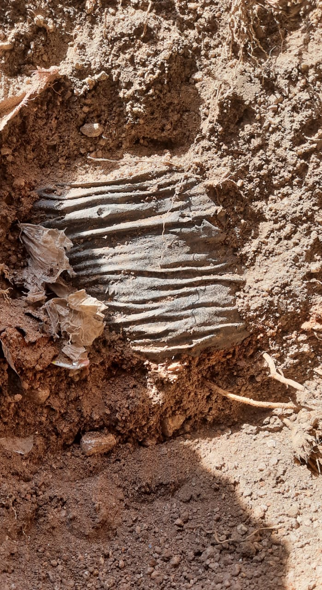

SRIJA GREEN GALAXY
Turning Agricultural Waste into a Greener Tomorrow
Turning Agricultural Waste into a Greener Tomorrow
OUR JOURNEY
A journey that began with a simple observation and grew into an effort to create sustainable alternatives.
THE BEGINNING
On 19 March 2020, at ZPHS Chintalakunta, Srija came across something unexpected while digging a pit for planting a sapling.
A black polythene nursery bag was buried in the soil along with the plant. The experience raised a simple but important question:
“If a plant grows for a better future, why should plastic remain in the soil for years?”
This observation became the inspiration for exploring alternatives to conventional single-use plastic nursery bags.

THE PROBLEM
Agricultural waste and single-use plastic can both create environmental challenges. We explored how one waste stream could help address another.

Single-use plastic nursery bags can remain in the environment for long periods and contribute to plastic waste.

Agricultural waste such as groundnut shells is often discarded or burned instead of being converted into useful products.

We transform groundnut shells into sustainable Biopots that provide an alternative to conventional plastic nursery bags.
OUR INNOVATION
Agricultural waste becomes the starting point for an environmentally conscious planting solution.

Our Biopots are developed using groundnut shells and natural ingredients through a manufacturing process designed for sustainable planting.
The objective is to create a practical alternative to single-use plastic nursery bags while giving agricultural waste a productive second life.
The Biopots are designed to naturally decompose after use, helping reduce persistent plastic waste.
WHY IT MATTERS
Provides an alternative approach to conventional single-use plastic nursery bags.
Gives discarded groundnut shells a useful purpose.
Designed around the needs of planting and nursery applications.
Focused on developing an accessible and practical sustainable solution.
OUR VISION
To encourage a future where agricultural waste is viewed as a resource and sustainable alternatives become part of everyday life.
OUR MISSION
To develop practical products from agricultural waste, reduce dependence on single-use plastic and create opportunities for sustainable rural development.